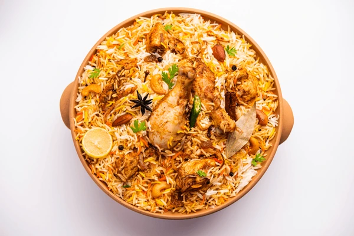

Biryani

Description
Chicken biryani is a flavorful and aromatic South Asian dish made with layers of marinated chicken, fragrant basmati rice,
and a blend of spices such as cumin, cardamom, and cloves. Cooked with saffron, fried onions, and fresh herbs like mint and
cilantro, it offers a rich, savory taste with a hint of heat. Traditionally cooked in a sealed pot to trap steam, chicken biryani
is a festive and beloved meal enjoyed across India, Pakistan, and beyond.
Ingredients
Chicken:
- 500g chicken (bone-in or boneless)
- 1 cup plain yogurt
- 1 tbsp ginger-garlic paste
- 1 tsp red chili powder
- ½ tsp turmeric powder
- 1 tsp garam masala
- Salt to taste
- Juice of ½ lemon
Rice:
- 2 cups basmati rice
- 4 cups water
- 2-3 cloves
- 2-3 green cardamom pods
- 1 small cinnamon stick
- 1 tsp garam masala
- 1 bay leaf
- Salt to taste
Biryani:
- 2 large onions, thinly sliced
- 2-3 tbsp oil or ghee
- 1 tsp cumin seeds
- A few saffron strands (optional), soaked in 2 tbsp warm milk
- Fresh cilantro and mint leaves, chopped
- 1 green chili (optional), slit
Steps
- Marinate the Chicken
- In a bowl, mix chicken with yogurt, ginger-garlic paste, red chili powder, turmeric, garam masala, lemon juice, and salt.
- Cover and let it marinate for at least 30 minutes (or up to 4 hours for deeper flavor).
- Cook the Rice
- Wash and soak basmati rice for 20-30 minutes.
- In a large pot, bring water to a boil. Add whole spices (cloves, cardamom, cinnamon, bay leaf) and salt.
- Add rice and cook until it's 70% cooked (still firm). Drain and set aside.
- Fry the Onions
- In a large pot (or biryani vessel), heat oil or ghee.
- Fry the sliced onions until golden brown. Remove half for garnishing.
- Cook the Chicken
- In the same pot, add the marinated chicken to the remaining onions.
- Cook on medium heat for about 10-15 minutes, until the chicken is partly cooked and the masala thickens.
- Layer the Biryani
- Turn the heat to low.
- Spread the parboiled rice over the chicken evenly.
- Drizzle with saffron milk, sprinkle fried onions, mint, and cilantro.
- Optional: Add a few drops of rose or kewra water for extra aroma.
- Dum (Steam) Cooking
- Cover the pot tightly with a lid or seal with dough.
- Cook on low heat for 20-25 minutes, or until the rice is fully cooked and flavors meld.
- Serve
- Let it rest for 10 minutes, then gently fluff.
- Serve hot with raita, salad, or boiled eggs.